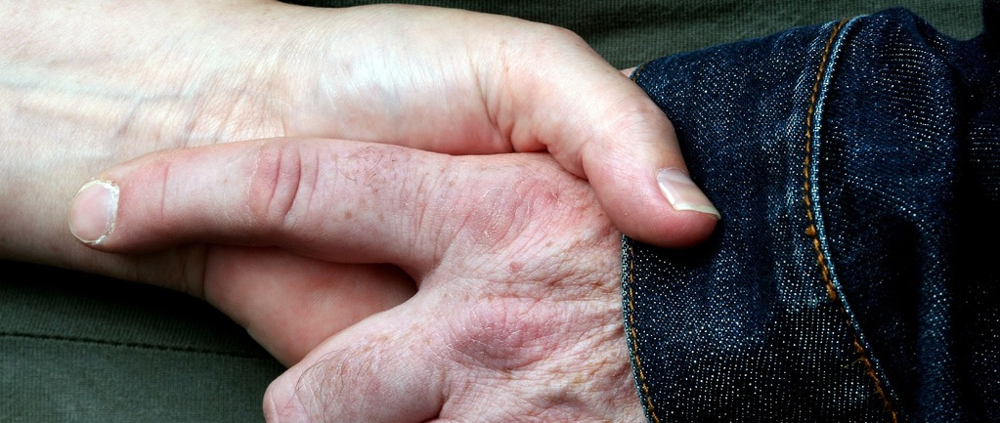

Hvad kan man gøre som forældre til et barn for at undgå internet mobning?
Fotografi: g_cowan via VisualHunt.com / CC BY-NCSom forældre kan du have en stor indflydelse på dit barns trivsel. Et godt udgangspunkt er at læse guiden ti lat hjælpe børn og unge med deres problemer. Dit barn kan ikke kun være offer for mobning, men også være en der mobber. Dette er ikke kun i skoletiden, men det kan være i fritiden, online. Herunder kan du læse nogle råd til at hjælpe dit barn. En mere fuldendt liste kan findes på denne side
Hvis dit barn bliver mobbet
- Forholde dig lyttende, undersøgende og tålmodig i samtalen med barnet
- Lytte til barnet. Spørge ind til, hvad der sker, hvor det sker, hvem der gør hvad, og hvordan barnet har det.
- Rose barnet for at fortælle om, hvad der er sket.
- Forsøge at få overblik over situationen. Indhent oplysninger om problemets omfang og karakter ved at kontakte relevante lærere, pædagoger, andre forældre og ledelsen på skolen. Undersøg også hvordan dit barn klarer sig andre steder, fx i SFO, klub og fritids- og sportsforeninger.
- Samarbejde med skolen om en fremadrettet indsats for dit barns trivsel.
Hvis dit barn mobber
- Tag en snak med dit barn. Forklar tydeligt og bestemt, at sådan en adfærd ikke er acceptabel. Prøv at få en snak i gang med dit barn om, hvorfor han/hun er med til at mobbe, og hvad der skal til, for at barnet ikke medvirker i mobningen.
- Støtte barnet i at ændre adfærd, men ikke personlighed. Det vil sige, det er i de konkrete situationer, der har med mobning at gøre, at barnet skal lære at handle på en anden måde. Barnet har brug for støtte fra voksne, da det kan være svært for barnet selv at skulle bryde ud af en bestemt rolle.
- Kontakte andre forældre og skolen. Ved en fælles indsats hvor forskellige voksne tager ansvar, opnår I større gennemslagskraft